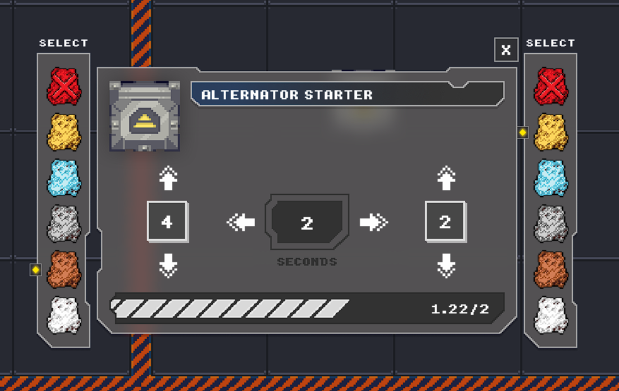
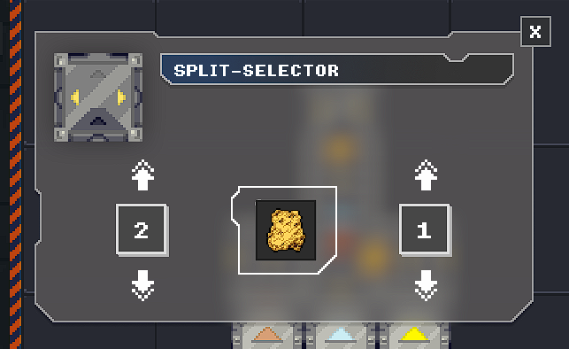

Like I said in the previous DevLog, the next update to Assembly Line 2 Desktop will bring a few new machines to give more options for better efficiency. So in this DevLog, I want to show them the progress on these machines. Previously I talked about a Split-Selector and an Alternator Starter machine, this two I can confirm will be added. There is also another one that I am experimenting with, which I have not decided if I will add.
Alternator Starter
The Alternator Starter is a great new machine that will help with those blueprints that might need an odd amount of resources, or maybe for better efficiency, or any other reason that you might need different ratios of resources. You can select two different resources, the ratio for each resource and like the normal Starter, the spawn time.

Split-Selector
The Split Selector is a nice help with redirecting resources, with it, you can more easily distribute the same resource around and with better control over quantity. You select which resource it would "Select", and you select the ratio to split to the left, and the ratio to the right.

Dual Starter
The Dual-Starter is a machine that, like I said, I am still testing to see if it would be a good balance addition to the game. It is basically the normal Starter, but it spawn two resources at the same time, one to each side. I think that if implemented, it would be a different count and limit to the Starter, and with more costly upgrades. The machine isn't fully implemented, so ignore, the indicator colors, and the lack of UI, this would be implemented if added to the game. Let me know your opinion on this machine.